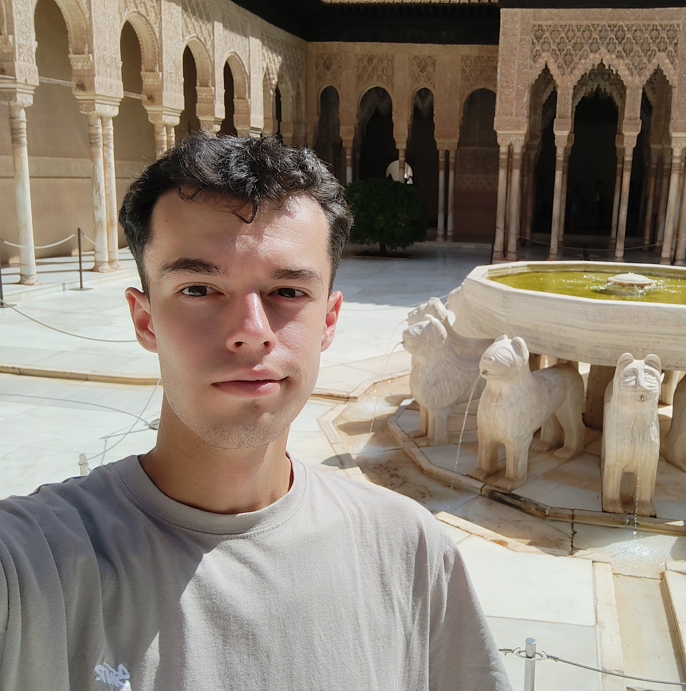
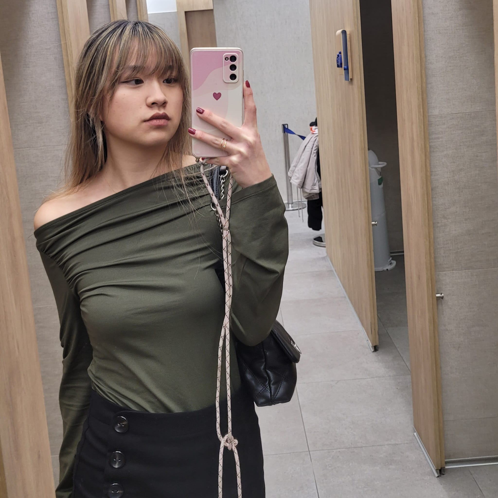

Miembros
David Díaz Gregorio

davidi03@ucm.es
Soy un gran fanatico de series, video juegos y anime, ademas de mi gran pasion por los ordenadores y la computación. En cuanto a mis aficiones practico mucho deporte, baloncesto principalmente, dibujo realismo y escribo textos de caracter reflexivo.
Antonio García Rodrigo
antong20@ucm.es
Hola!! me llamo Antonio, seré uno de los desarrolladores web en esta asignatura, soy un estudiante de ingeniería de computadores, me encanta ver series jugar a videojuegos, salir de ruta por la montaña y jugar al tenis.
María Wen Bravo Gago
mariaweb@ucm.es
¡Buenas! ☺
Soy María y me encanta la música, es imposible que salga de casa sin mis auriculares. Escucho de todo pero me centro más en pop y me declaro hater de la electrónica. Adoro los planes sociales aunque también aprecio el tiempo a solas.
Mario Carrilero Sanchez

Hola, soy Mario soy estudiante de ingeniería informática y me encanta el trap argentino y los videojuegos.
Daniel Barroso Corral

dabarr02@ucm.es
Hola, soy Daniel y estoy estudiando ingeniería de computradores. Me gustan las croquetas y los juegos de FromSoftware (no más que las croquetas)
El perro se llama Nora, es adicta al pan.